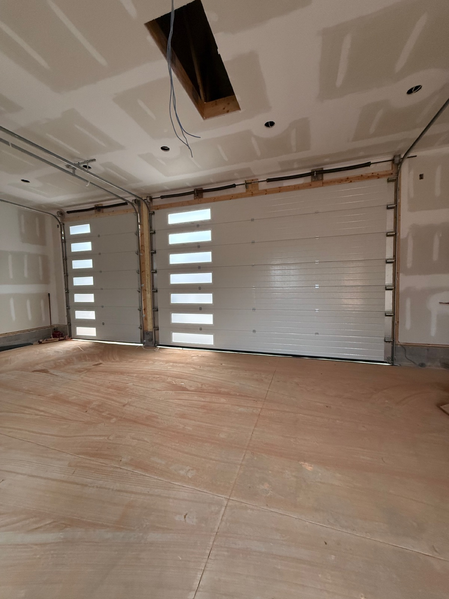
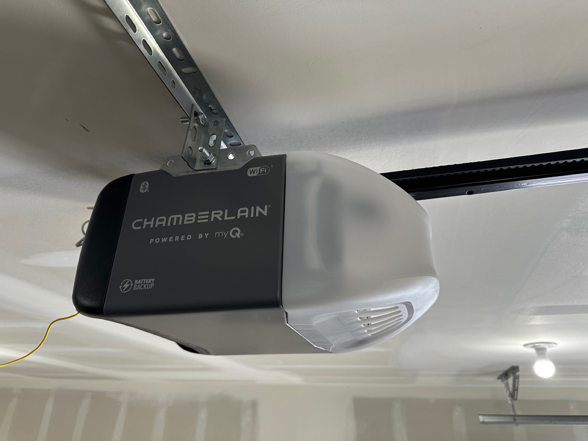

Broken spring? Door off track? Opener quit? We fix it the same day — honest pricing, licensed & insured, free estimates.
Open Mon–Sat 7:00 AM – 7:00 PM · Boiling Springs, SC
Our Services
From emergency repairs to brand-new custom doors — one local crew handles it all, start to finish.

Off-track doors, cables, rollers, panels, sensors — fast diagnosis and same-day fixes.
Repair services →
Broken torsion or extension springs replaced same day with high-cycle springs — from $290.
Spring replacement →
LiftMaster, Chamberlain, Genie and smart Wi-Fi openers — installed, calibrated, quiet.
Opener installation →
Insulated steel, modern and custom garage doors installed from $1,950 — free on-site estimate.
Installation →Why Choose Us
Rated 4.8 stars by our customers on Google — real reviews from Spartanburg & Greenville homeowners.
Maintenance Plans
Annual tune-up: lubrication, spring tension check, safety-sensor alignment, opener calibration and a full 25-point inspection. Ask about it on your next visit.
Fast dispatch across the Upstate:
Call Viking Garage Door for same-day, safe and affordable garage door repair or a free installation estimate.